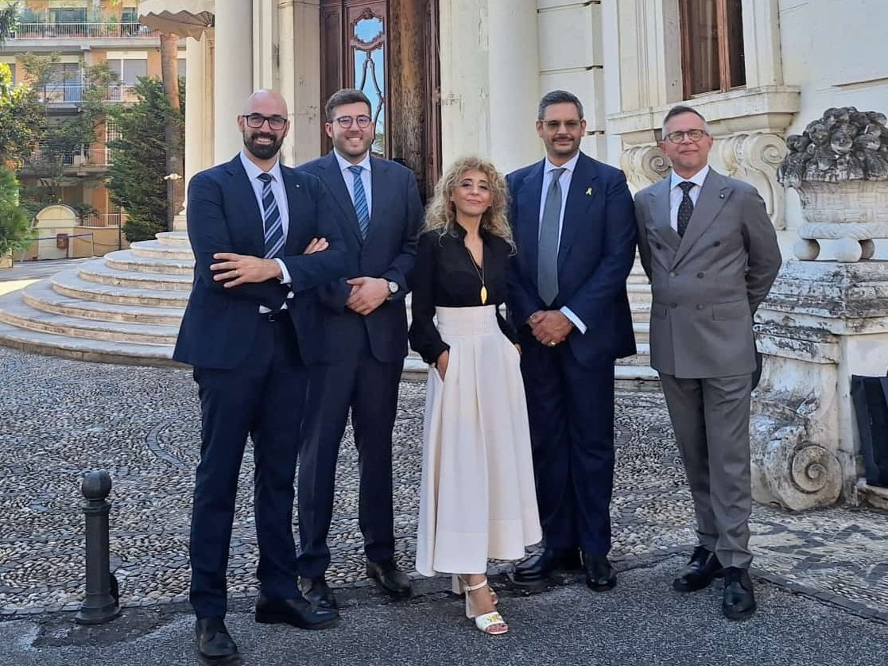
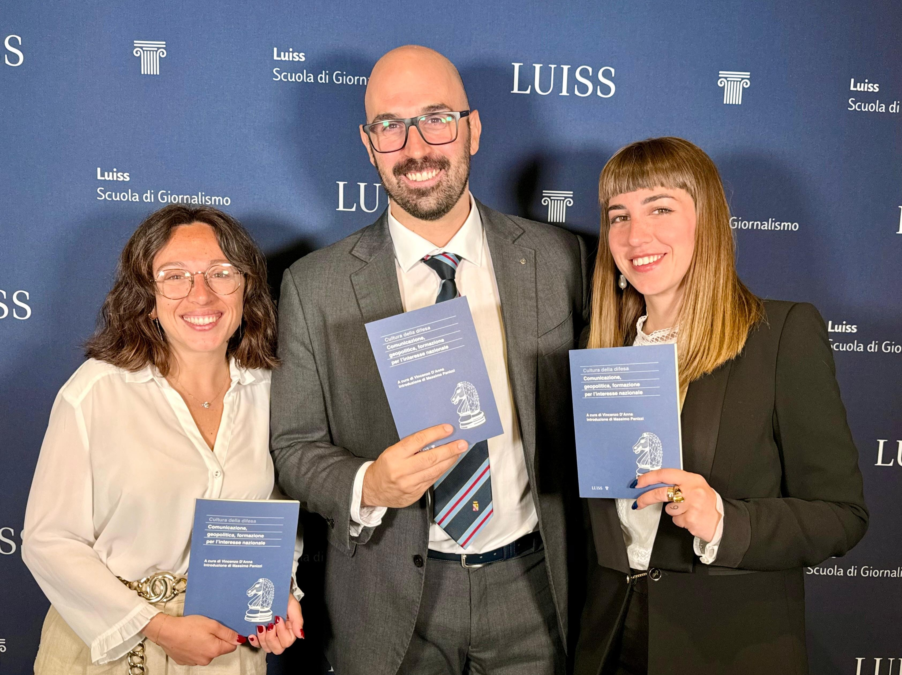

DYNAMES
DYNAMES

Acquista il volume e sostieni ONAOMCE
Il volume Cultura della Difesa. Comunicazione, Geopolitica, Formazione per l’Interesse Nazionale è pubblicato da LUISS University Press nella collana Koinè — Terre e mari.
I proventi saranno destinati all’ONAOMCE — Opera Nazionale di Assistenza per gli Orfani e i Militari di Carriera dell’Esercito.
Per avere il report in formato digitale, mandare una mail a redazione@dynames.it.

Il report Cultura della Difesa. Comunicazione, Geopolitica, Formazione per l’Interesse Nazionale raccoglie e rielabora gli interventi dell’evento svoltosi il 18 settembre 2025 presso la LUISS, proponendo una riflessione organica sul rapporto tra sicurezza, democrazia, informazione, formazione e interesse nazionale.
Il volume interpreta la difesa non come materia riservata agli specialisti, ma come bene comune e responsabilità collettiva. Comunicazione, geopolitica e formazione vengono lette come tre dimensioni interdipendenti: la prima costruisce consapevolezza pubblica, la seconda colloca le scelte nazionali nello scenario internazionale, la terza prepara cittadini, classi dirigenti e organizzazioni a comprendere le sfide della sicurezza contemporanea.
Ne emerge un invito a rafforzare la cultura della difesa come infrastruttura civile del Paese: una cultura capace di unire istituzioni, Forze Armate, università, imprese, media e società civile di fronte a minacce ibride, competizione tecnologica, disinformazione, crisi sistemiche e nuove forme di conflitto.
Tre prospettive per l’interesse nazionale
Fiducia e consapevolezza
Il racconto della difesa richiede chiarezza, rigore e capacità di contrastare semplificazioni, propaganda e disinformazione.
Deterrenza e sovranità
La sicurezza nazionale si misura nella capacità di leggere il contesto internazionale, tutelare interessi strategici e rafforzare alleanze.
Capitale umano
Educazione civica, leadership, competenze interdisciplinari e cultura istituzionale sono elementi decisivi della resilienza nazionale.
Le voci del report
Elenco dei contributi effettivamente presenti nel report, con il relativo titolo di paragrafo. Sono esclusi moderatori e partecipanti citati nei riepiloghi dei panel che non hanno un contributo autonomo intestato.
Nota e introduzioni
- Vincenzo D’AnnaCuratore del reportNota del curatore
- Gianni RiottaDirettore della Scuola di Giornalismo “Massimo Baldini” LUISSCultura della difesa: comunicazione, geopolitica, formazione per l’interesse nazionale
- Massimo PanizziGenerale di Corpo d’Armata (ris.) dell’Esercito ItalianoDifesa è libertà: l’Italia alla prova della coscienza nazionale
- Matteo Perego di CremnagoSottosegretario di Stato alla DifesaLa cultura della difesa nella sfera mediatica e nel marketing politico istituzionale
Capitolo 1 — La cultura della difesa nella sfera mediatica e comunicativa
- Massimo PanizziGenerale di Corpo d’Armata (ris.) dell’Esercito ItalianoLa cultura della difesa nella sfera mediatica e comunicativa
- Manuela Della GiustinaTenente Colonnello; contributo sull’intervento del Gen. C.A. Mauro D’UbaldiDifesa e società: l’unicità nell’identità condivisa secondo il Generale di Corpo d’Armata dell’Esercito Italiano Mauro D’UbaldiSottotitolo: La difesa come espressione della nazione: etica, comunicazione e corresponsabilità per la sicurezza comune
- Anna BisognoUniversitas MercatorumDifesa e società mediatizzata: l’immagine militare nello spazio comunicativo contemporaneo
- Maurizio CapraraDocente di Etica e deontologia del giornalismo alla Scuola di Giornalismo LUISSComunicare la difesa: limiti, evoluzioni e sfide della consapevolezza nazionale
Capitolo 2 — Geopolitica e interesse nazionale
- Massimo PanizziGenerale di Corpo d’Armata (ris.) dell’Esercito ItalianoGeopolitica e interesse nazionale
- Edmondo CirielliViceministro degli Affari Esteri e della Cooperazione InternazionaleIl nostro soft power: diplomazia, difesa e responsabilità dell’Italia nel mondo
- LUISS Scuola di GiornalismoContributo sull’intervento dell’Ammiraglio Giuseppe Cavo Dragone, Presidente del Comitato Militare NATOLa cultura della difesa tra deterrenza, resilienza e coesione democratica
- Claudio CatalanoIngegnere, IVECO Defence Vehicles (IDV)Costruire autonomia nella difesa: industria, tecnologia e sicurezza delle catene di approvvigionamento
- Luciano BozzoDocente di Relazioni internazionali e Studi strategici, Università di FirenzeDifesa e sicurezza: realtà e percezione dell’ordine internazionale
- Marco Di LiddoDirettore Centro Studi Internazionali (Ce.S.I.)Tra pace e quiete: percezione del rischio e conflitto permanente nel nuovo scenario globale
- LUISS Scuola di GiornalismoContributo sull’intervento del Dott. Stefano Pontecorvo, già Presidente Leonardo S.p.A.Sopravvivenza politica e strategica: il ruolo del comparto difesa e sicurezza nel Sistema Paese
Capitolo 3 — Educazione e formazione
- Massimo PanizziGenerale di Corpo d’Armata (ris.) dell’Esercito ItalianoEducazione e formazione
- Giovanna CozzolinoIngegnere, FORM&ATPUna cultura che unisce, una difesa che include: verso una difesa partecipata e generazionale
- Franco MassiSegretario Generale della Corte dei Conti“Primum vivere, deinde philosophari”: agire per sopravvivere nel nuovo scenario globale
- Stefano ToncichVP HR Italy, MBDAFormare il capitale umano e la leadership: competenze, valori e responsabilità nei contesti multinazionali di difesa
- Antonio NataliDirettore Generale dell’Ufficio di Gabinetto del Ministero dell’Istruzione e del MeritoEducazione civica e istituzioni: una strategia per la scuola italiana
- Stefano ManninoGenerale di Corpo d’Armata, Presidente Centro Alti Studi Difesa (CASD)Il CASD e la formazione del pensiero e dell’approccio strategico
- Umberto FebbraroFederazione Relazioni Pubbliche Italiana (FERPI)Comunicare la sicurezza: tempo, verità e responsabilità nel nuovo ecosistema informativo
Un progetto condiviso per sviluppare il valore della cultura della difesa
Il report nasce dall’esigenza di non lasciare il confronto del 18 settembre 2025 alla sola dimensione dell’evento. L’obiettivo è trasformare una giornata di dialogo tra istituzioni, mondo militare, università, giornalismo, imprese e società civile in uno strumento stabile di riflessione, consultazione e lavoro.
Il progetto ha preso forma attorno a una convinzione comune: la difesa non è un tema riservato agli addetti ai lavori, ma una responsabilità collettiva che riguarda la libertà, la sicurezza, la resilienza democratica e la capacità del Paese di comprendere il proprio ruolo nello scenario internazionale. Per questo il volume mette insieme comunicazione, geopolitica e formazione, tre dimensioni diverse ma profondamente connesse.
La collaborazione tra DYNAMES, LUISS Scuola di Giornalismo, FORM&ATP e gli altri soggetti che hanno accompagnato il percorso ha permesso di costruire un ponte tra competenze differenti: analisi strategica, cultura istituzionale, formazione delle nuove generazioni, comunicazione pubblica e attenzione al Sistema Paese. Da questa convergenza nasce un report pensato non come semplice memoria dell’iniziativa, ma come base per continuare a promuovere una cultura della difesa aperta, consapevole e partecipata.

